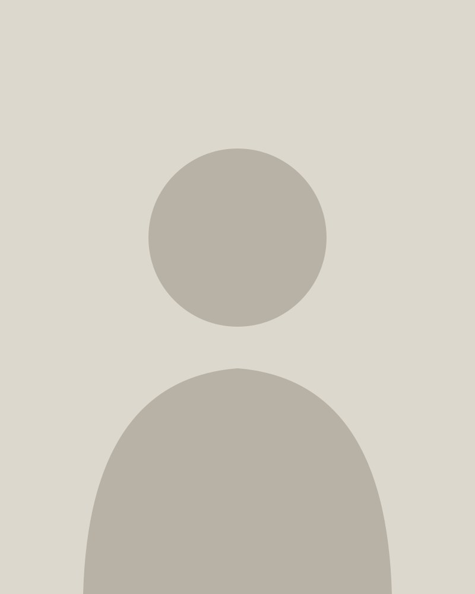

01
OCSDO Year in Review 2024 and 2025
Flagship annual reports for NASA's Office of the Chief Science Data Officer.
- NASA
- Reports
- Editorial
- Design

Who I am
I'm a Strategic Communications Specialist with a passion for turning complex technical topics into clear, engaging, and visually compelling stories that the public can understand and leaders can act on. I bridge the technical and non-technical because inside every spreadsheet, chart, and dataset is a mission impact story that matters.
I carry this passion through every stage of my career. I started as a high school math teacher, learning to explain hard things to English Learners. Then came nearly seven years at NASA, telling different mission and science stories, like Cassini, Earth science missions, the International Space Station, Commercial Space, and open science and AI. Today I bring the same passion to telling the story of digital transformation at U.S. Customs and Border Protection.
Featured work
01
Flagship annual reports for NASA's Office of the Chief Science Data Officer.
02
Mission and technology decks for JPL-managed Earth science missions, published for download on JPL's Earth Science site.
SMAP · GRACE and GRACE-FO · ECOSTRESS · Orbiting Carbon Observatories · TOPEX/Jason series with SWOT

03
Making 13 years of Cassini mission data easier for scientists and the public to find and use.